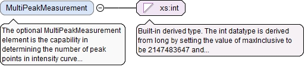
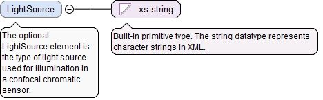
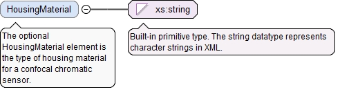

<xs:element name="SpotDiameter" type="LinearValueType" minOccurs="0"><xs:annotation><xs:documentation>The optional SpotDiameter element is the diameter of a focused light spot.</xs:documentation></xs:annotation></xs:element>
<xs:element name="MinMeasuringDistance" type="LinearValueType" minOccurs="0"><xs:annotation><xs:documentation>The optional MinMeasuringDistance element is the minimum measuring distance.</xs:documentation></xs:annotation></xs:element>
<xs:element name="MaxMeasuringDistance" type="LinearValueType" minOccurs="0"><xs:annotation><xs:documentation>The optional MaxMeasuringDistance element is the maximum measuring distance.</xs:documentation></xs:annotation></xs:element>
The optional MultiPeakMeasurement element is the capability in determining the number of peak points in intensity curve of a chromatic confocal sensor for thickness measurement purposes.
Diagram

Type
xs:int
Properties
content
simple
minOccurs
0
Source
<xs:element name="MultiPeakMeasurement" type="xs:int" minOccurs="0"><xs:annotation><xs:documentation>The optional MultiPeakMeasurement element is the capability in determining the number of peak points in intensity curve of a chromatic confocal sensor for thickness measurement purposes.</xs:documentation></xs:annotation></xs:element>
The optional LightSource element is the type of light source used for illumination in a confocal chromatic sensor.
Diagram

Type
xs:string
Properties
content
simple
minOccurs
0
Source
<xs:element name="LightSource" type="xs:string" minOccurs="0"><xs:annotation><xs:documentation>The optional LightSource element is the type of light source used for illumination in a confocal chromatic sensor.</xs:documentation></xs:annotation></xs:element>
<xs:element name="MaxTilt" type="AngularValueType" minOccurs="0"><xs:annotation><xs:documentation>The optional MaxTilt element is the maximum tilt in a sensor angle that could generate a usable signal.</xs:documentation></xs:annotation></xs:element>
The optional HousingMaterial element is the type of housing material for a confocal chromatic sensor.
Diagram

Type
xs:string
Properties
content
simple
minOccurs
0
Source
<xs:element name="HousingMaterial" type="xs:string" minOccurs="0"><xs:annotation><xs:documentation>The optional HousingMaterial element is the type of housing material for a confocal chromatic sensor.</xs:documentation></xs:annotation></xs:element>
<xs:element name="OpticalFiberCableLength" type="LinearValueType" minOccurs="0"><xs:annotation><xs:documentation>The optional OpticalFiberCableLength element is the length of an optical fiber length.</xs:documentation></xs:annotation></xs:element>
The (required) UnitName attribute is the unit name for the UserDefinedUnitValueType.
Source
<xs:element name="ShockTolerance" type="UserDefinedUnitValueType" minOccurs="0"><xs:annotation><xs:documentation>The optional ShockTolerance element is the level of shock tolerance for a confocal chromatic sensor.</xs:documentation></xs:annotation></xs:element>
The (required) UnitName attribute is the unit name for the UserDefinedUnitValueType.
Source
<xs:element name="VibrationTolerance" type="UserDefinedUnitValueType" minOccurs="0"><xs:annotation><xs:documentation>The optional VibrationTolerance element is the level of vibration tolerance for a confocal chromatic sensor.</xs:documentation></xs:annotation></xs:element>
The required id attribute is the QIF id of the measurement resource, used for referencing.
Source
<xs:complexType name="ConfocalChromaticSensorType"><xs:annotation><xs:documentation>The ConfocalChromaticSensorType defines a confocal chromatic sensor.</xs:documentation></xs:annotation><xs:complexContent><xs:extension base="SensorType"><xs:sequence><xs:element name="SpotDiameter" type="LinearValueType" minOccurs="0"><xs:annotation><xs:documentation>The optional SpotDiameter element is the diameter of a focused light spot.</xs:documentation></xs:annotation></xs:element><xs:element name="MinMeasuringDistance" type="LinearValueType" minOccurs="0"><xs:annotation><xs:documentation>The optional MinMeasuringDistance element is the minimum measuring distance.</xs:documentation></xs:annotation></xs:element><xs:element name="MaxMeasuringDistance" type="LinearValueType" minOccurs="0"><xs:annotation><xs:documentation>The optional MaxMeasuringDistance element is the maximum measuring distance.</xs:documentation></xs:annotation></xs:element><xs:element name="MultiPeakMeasurement" type="xs:int" minOccurs="0"><xs:annotation><xs:documentation>The optional MultiPeakMeasurement element is the capability in determining the number of peak points in intensity curve of a chromatic confocal sensor for thickness measurement purposes.</xs:documentation></xs:annotation></xs:element><xs:element name="LightSource" type="xs:string" minOccurs="0"><xs:annotation><xs:documentation>The optional LightSource element is the type of light source used for illumination in a confocal chromatic sensor.</xs:documentation></xs:annotation></xs:element><xs:element name="MaxTilt" type="AngularValueType" minOccurs="0"><xs:annotation><xs:documentation>The optional MaxTilt element is the maximum tilt in a sensor angle that could generate a usable signal.</xs:documentation></xs:annotation></xs:element><xs:element name="HousingMaterial" type="xs:string" minOccurs="0"><xs:annotation><xs:documentation>The optional HousingMaterial element is the type of housing material for a confocal chromatic sensor.</xs:documentation></xs:annotation></xs:element><xs:element name="OpticalFiberCableLength" type="LinearValueType" minOccurs="0"><xs:annotation><xs:documentation>The optional OpticalFiberCableLength element is the length of an optical fiber length.</xs:documentation></xs:annotation></xs:element><xs:element name="ShockTolerance" type="UserDefinedUnitValueType" minOccurs="0"><xs:annotation><xs:documentation>The optional ShockTolerance element is the level of shock tolerance for a confocal chromatic sensor.</xs:documentation></xs:annotation></xs:element><xs:element name="VibrationTolerance" type="UserDefinedUnitValueType" minOccurs="0"><xs:annotation><xs:documentation>The optional VibrationTolerance element is the level of vibration tolerance for a confocal chromatic sensor.</xs:documentation></xs:annotation></xs:element></xs:sequence></xs:extension></xs:complexContent></xs:complexType>